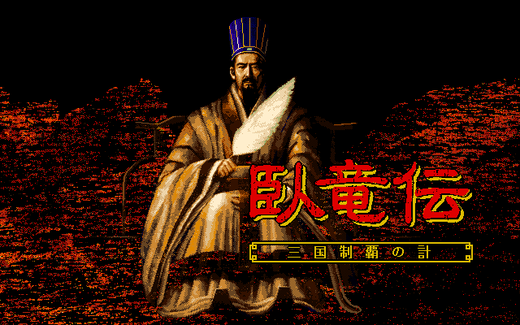
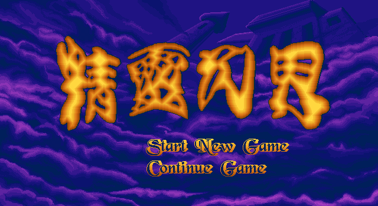

兵種點數
初始兵種點數 = 50 勝利後點數 = 原有點數 + 5 招募後點數 = 原有點數 − 該兵種招募費用 遣散後點數 = 原有點數 + 該系初階兵種招募費用
僧侶 5、戰士 2、弓箭手 3、巨弩 9、術士 6、騎兵 4、飛鷹騎士 7。擊倒敵人不會逐隻增加兵種點數。


載入遊戲資料…
反應/移動以點數表示，實際格數依地形耗點計算。圖像色彩待確認。
名稱依圖像特徵暫定，非已核對的官方名稱。屬性為兵種預設值，實戰可能依難度調整。
傷害與治療顯示技能基值，實際效果另受施術者智慧等戰鬥計算影響。
初始兵種點數 = 50 勝利後點數 = 原有點數 + 5 招募後點數 = 原有點數 − 該兵種招募費用 遣散後點數 = 原有點數 + 該系初階兵種招募費用
僧侶 5、戰士 2、弓箭手 3、巨弩 9、術士 6、騎兵 4、飛鷹騎士 7。擊倒敵人不會逐隻增加兵種點數。
兵種的反應/移動是可消耗的移動點數。每經過一格，扣除該地形對應的點數；不同路徑的耗點可能不同。
路徑耗點 = 沿途每格的地形耗點總和 可走條件：路徑耗點 ≤ 單位目前反應/移動 同一種地形的直線格數 = ⌊反應/移動 ÷ 每格耗點⌋
地形表依野外／城內及地面／飛行分開。不可通行的地形、其他單位與地圖邊界也會限制可達位置。
轉職後反應/移動 = 轉職前反應/移動 + 轉入加成
先算包圍、支援與地形修正，再扣除修正防禦。整數除法與最後的傷害取整均向零取整。
修正係數 K = 向零取整（(包圍 + 支援 + 向零取整(地形 ÷ 2)) ÷ 80） 修正防禦 = 防禦 × (1 + 向零取整(地形 ÷ 80)) 候選傷害 = 向零取整（修正攻擊 − 修正防禦）
先手差值為正、候選傷害小於 15 時，改取隨機 15–25；未超過防禦判定時，改取隨機 10–15。實際扣血最多為目標剩餘生命。
A、B 是例程收到的兩個攻擊輸入；D₀、D₁ 是兩個單位的防禦，K₀、K₁ 與 T₀、T₁ 是其修正係數與地形值。
分支 0： P = A × (1 + K₁ ÷ 80) E = D₀ × (1 + 向零取整(T₀ ÷ 80)) D₀ ≥ P → 隨機 10–15 否則取向零取整(P − E)；小於 15 → 隨機 15–25 分支 1： P = A + U × K₀ E = D₁ × (1 + 向零取整(T₁ ÷ 80)) P ≤ E → 隨機 10–15 否則取向零取整(P − E)；小於 15 → 隨機 15–25
U 為不固定值，因此此分支無法只由兵種屬性確定傷害。分支 0 以防禦 D₀ 判定，計算傷害時扣除修正防禦 E。
反擊威力 = B × (1 + K ÷ 80) ÷ 80 反擊候選傷害 = 向零取整（反擊威力 − 修正防禦）
K 使用反擊方對應的修正係數。兩次除以 80 分開計算。
反擊差值為正、候選傷害小於 10 時，改取隨機 10–15；差值不為正時，改取隨機 5–10。
正在使用技能、任一方為射擊系或投擲系，以及特定狀態會禁止反擊。當「先手傷害大於被擊者生命」時禁止；恰好相等仍會進入後續判定。
A = 技能傷害基值 + 向零取整（施術者智慧 ÷ 2） B = 0 將 A、B 代入攻擊傷害例程 實際扣血 = min（例程傷害，目標剩餘生命）
法術共用上述兩個出手分支，並非「基值加智慧後直接扣血」；其中一個分支會受到不固定值 U 影響。B 為 0，且技能施放會禁止反擊。
耗魔直接扣除技能頁的數值。痲痺與石化另走狀態效果流程，不套用普通傷害公式。
計算治療量 = 技能治療基值 + ⌊施術者智慧 ÷ 2⌋ 實際恢復量 = min（計算治療量，目標最大生命 − 目標目前生命） 治療後生命 = min（目標最大生命，目標目前生命 + 計算治療量）
範圍治療對每個符合條件的友方目標分別套用生命上限，不把治療基值平均分攤給目標。
載入臥龍傳資料…